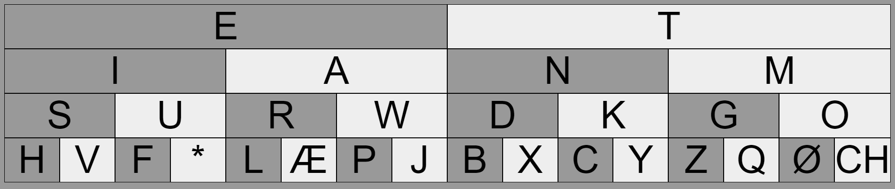
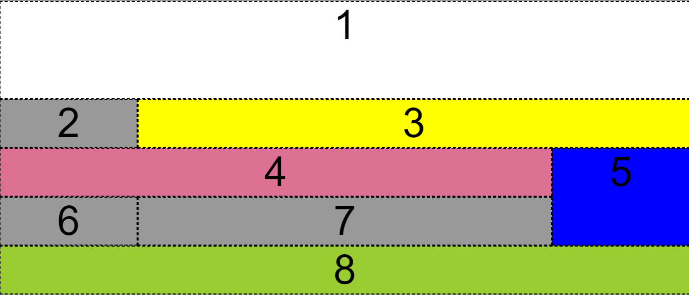

-
Html:
På første hovedforløb blev jeg instrueret til det grundlæggende af Html. Html betyder HyperText Markup Language.
HTML bruges til at strukturere indholdet på en hjemmeside ved hjælp af en række HTML-elementer. HTML-elementer består af tags. Et tag består af < og >. Det der står imellem < og > er tag-typen. Der er altid et start tag
og et slut tag . Imellem disse tags kan man skrive tekst eller andet data. Den tekst eller data du indsætter mellem start-tagget og slut-tagget, vil blive behandlet i henhold til hvad tagget betyder. Et element kan også have tilhørende attributter, som afgør hvordan elementet skal behandles.I kan se her nedeunder på en af de første opgaver jeg skulle lave på forløbet, hvordan de forskellige tags kan bruges.
-
Css:
Jeg blev også instrueret til det grundlæggende af css. CSS står for "Cascading Style Sheets".
CSS bruges til at definere layoutet på dine HTML-sider. CSS farvelægger og visualiserer dine HTML-sider. CSS består nemlig af flere hundrede forskellige egenskaber, som giver en mulighed for at bestemme skrifttyper, tekst størrelser, farver, marginer, kanter, højder, bredder, baggrundsbilleder, baggrundsfarver osv. på ens hjemmeside. CSS et layout sprog, mens HTML er et struktur-sprog. CSS kan separates fra html og vær sin egen fil nemlig til et stylesheet, som er linket til ens HTML-dokument. Man kan også skrive CSS direkte i HTML-dokumentet, hvis man ønsker at style et specifikt HTML-element på en specifik side. Denne måde at style sine individuelle HTML-elementer på kaldes ”in-line styling”, da du skriver din CSS direkte sammen med din HTML.
I kan se her nedeunder videre udvikling på min første html site med brug af css
-
Css-grid:
CSS-grid er en teknik i ens Stylesheets, der gør det muligt for webudviklere at oprette responsive webdesignlayouts lettere og konsekvent på tværs af browsere. Der har været andre metoder til at kontrollere websidens layoutmetoder, såsom tabeller, kassemodellen og CSS flexbox.
  -
Responsiv Design
Responsive design er en måde at designe hjemmesider på. Man designer hjemmesiden med den hensigt, at den skal kunne ses og bruges på både smartphones, tablets og almindelige desktop computere. Ideen er, at hjemmesiden automatisk skal kunne tilpasse sig skærmens størrelse, således at tekst, billeder, tabeller, menuer, grafik osv. skalleres enten op eller ned, alt afhængig af hvilken enhed brugeren benytter til at se siden. At have en responsive hjemmeside, er i takt med den eksplosive udbredelse af mobile enheder, blevet vigtigere end nogensinde før. Et godt på en responsive hjemmeside er NemProgrammering.dk selv. Når du besøger siden, så prøv at gøre dit browservindue større og mindre.
 >
>
-
PHP
PHP står for "Hypertext Preprocessor"
Dette betyder i praksis, at al bearbejdning af kode og data i PHP bliver kørt på serveren, som herefter sender resultatet tilbage som HTML til brugerens browser. Dette ligger i kontrast til JavaScript, hvor koden bliver læst og udført direkte i/af klientens browser. Alle filer der vil anvende PHP skal ende på .php, ellers vil serveren ikke kunne læse udføre PHP koden. Du kan både skrive PHP, HTML, CSS og JavaScript i PHP filer. PHP giver dig mulighed for at sende e-mails fra din hjemmeside, have login funktionalitet på din hjemmeside, køre et forum, lave afstemninger samt mange andre interaktive og databasedrevne webapplikationer. Disse webapplikationer er alt sammen noget, som ikke er muligt udelukkende med HTML, CSS og JavaScript for den sags skyld.

-
One page project
Med den samlet grundlæggende viden af HTML og CSS fremstillet jeg dette website under et OnePage projekt hvori jeg skulle lave en side omkring kiks.
-
Refleksion
Jeg havde nogen som helst erfaring med kodning af hjemmesider og havde heller ikke nogen ide om at det var det jeg skulle arbejde med hjemmesider i den nærmeste fremtid,
men forløbet her har givet mig min lysten og nysgerrigheden for at arbejde endnu videre med det.
Der er også blevet lavet en webbog af hele holdet, hvor der står hva man ellers kan bruge HTML og CSS, bogen kan findes her Webbogen
Kilder: linkedin learning, w3schools og intro til html, CSS og PHP - Niels Østergaard